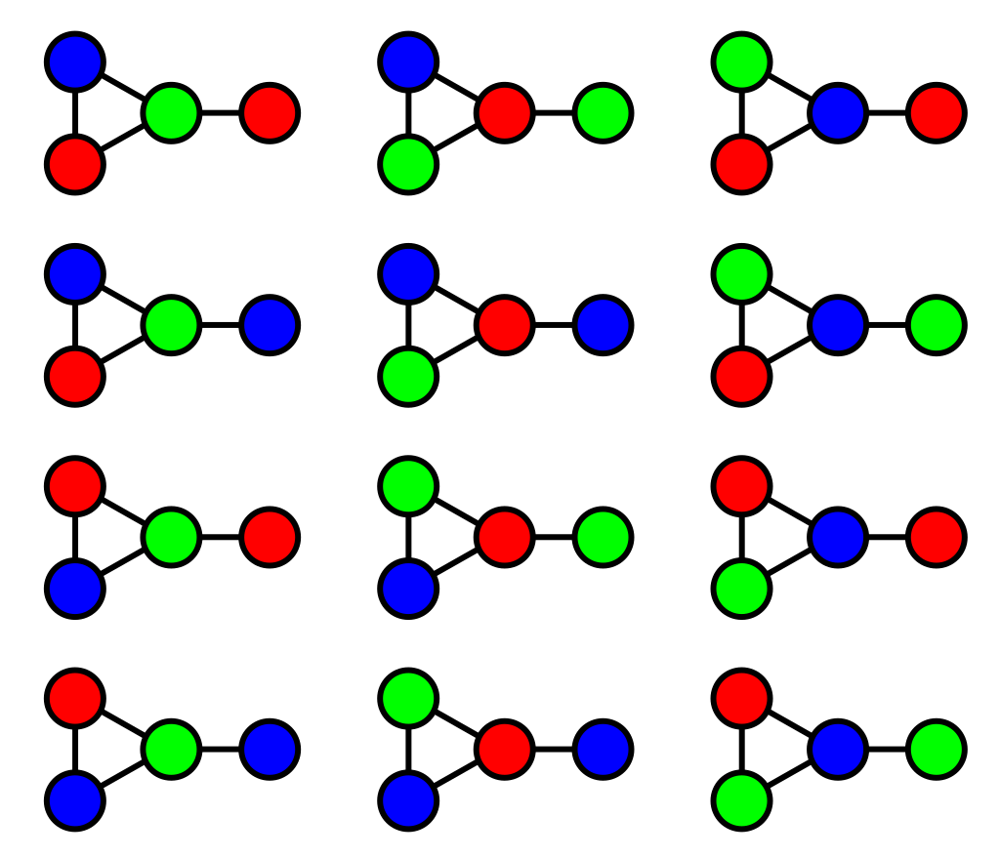

Graph Coloring
The coloring problem is of determining
the least number of colors that can be used to color a map so that adjacent
regions never have the same color. So, a coloring of a simple graph is the assignment
of a color to each vertex of the graph so that no two adjacent vertices are
assigned the same color.

Fig : a graph 3-colored in 12
different ways
Chromatic Number:
The chromatic number of a graph is the least number of colors needed for a coloring of
this graph. The chromatic number of a graph G is denoted by χ(G).
The Four Color Theorem:
The chromatic number of a planar graph is no greater than four.
So, χ(G = planar graph) <= 4.
Coloring of Kn:
The chromatic number of a complete graph Kn (where n is a positive
integer) is n, because each vertex connected to all other vertices, we need at least
n colors so that no pair of adjacent vertices is the same color.
Coloring of Km,n:
The chromatic number of a complete bipartite graph Km,n (where m & n are positive
integers) is 2, because we can color the set of m vertices with one color and the
set of n vertices with a second color. Because edges connect only a vertex
from the set of m vertices and a vertex from the set of n vertices,
no two adjacent vertices have the same color.
Coloring of Cn:
The chromatic number of a cycle Cn (where n is a positive
integer) depends on n. In general, two colors are needed to color Cn
when n is even. When n is odd and n > 1, the chromatic number of Cn
is 3.